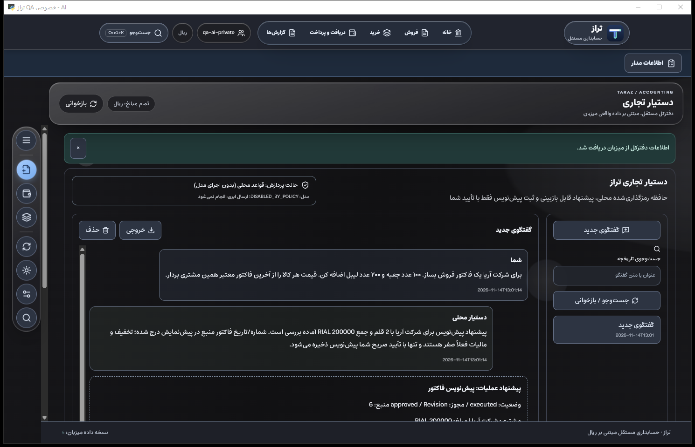

دستیار تجاری تراز
پیشنمایش واقعی رابط توسعه روی Windows WebView2، همراه با شواهد و محدودیتهای تأییدشده. این صفحه یک گالری مشاهده است، نه نسخهٔ نصبشدهٔ نرمافزار.

b5babd045f3f5b0dca5a9dd792a9381ff5bbff2522a8ed3cbf356902cff60b0a
در این نمونه چه چیزی واقعاً اجرا شد؟
گفتگوی فارسی با حافظه
تاریخچه در SQLite مجزا ذخیره شد؛ متن پیام و پیشنهاد با Windows DPAPI رمزگذاری شدند. بازخوانی پس از ساخت دوباره API در آزمون موفق بود.
قیمت مستند از فروش قبلی
از فاکتور صادرشدهٔ همان مشتری، کالاهای دارای شناسه دقیق و قیمت منبع یافت شدند. جستجو طبق شمارهٔ ترتیب صدور است و قیمت مبهم رد میشود.
تأیید انسانی قبل از ذخیره
از درخواست «۱۰۰ عدد جعبه و ۲۰۰ عدد لیبل»، پیشنهاد ۲۰۰٬۰۰۰ ریالی ساخته شد. فقط پس از بررسی و تأیید، پیشنویس در دفتر آزمایشی ثبت شد.
حفاظت از دفترکل
ثبت پیشنویس، صدور رسمی یا Journal جدید ایجاد نکرد. API اصلی Revision و دسترسی را کنترل کرد. هیچ مدل آنلاین یا محلی در این گردشکار اجرا نشد.
موانع قبل از عرضه
ورود معتبر و شناسه ثابت شرکت هنوز در مسیر اجرای عادی EXE به دستیار متصل نشدهاند. همچنین Backup خودکار فعلی تاریخچهٔ جدید چت را پوشش نمیدهد و Restore کلید DPAPI روی دستگاه دیگر اثبات نشده است. ارتقای واقعی از ۱.۰.۴ نیز گیت کامل حفاظت داده را نگذرانده. بنابراین این قابلیت هنوز روی سیستم کاربر نصب و فعال نشده است.
گزارش توسعه و گیتها: AI Phase 1 و Upgrade Safety